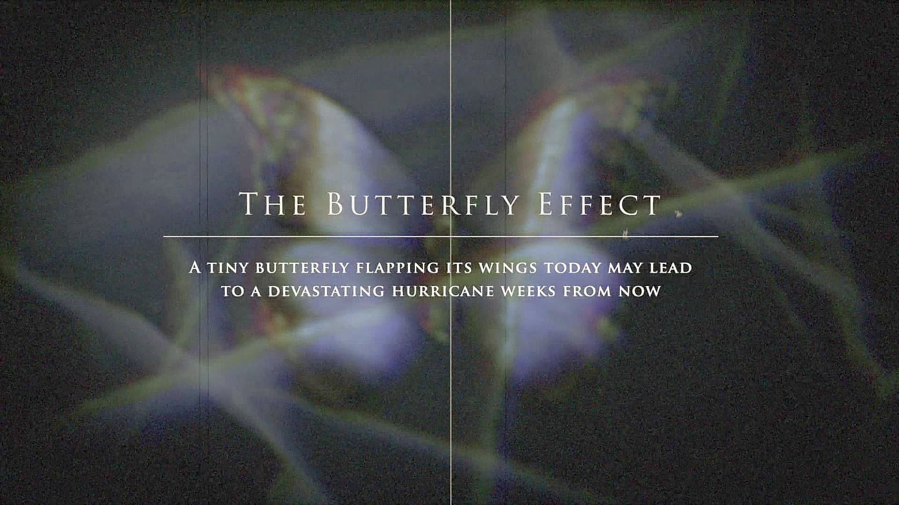

❝Every age has its storytelling form, and video gaming is a huge part of our culture.
People are enthralled with video games in the same way as other people love the cinema or theatre.❞
— Andy Serkis (Arnott, 2010)
Video Game Stories
are Good, Actually

By Ethan Delany
I am very experienced with video game narratives.
Many still believe games are just for fun
and don't contain any narrative substance.
(Oliver et al., 2016)
So, why should you consider video game narratives?
I'm going to cover:
- Interactivity in games.
- Increased immersion in games.
- The unique emotional connections they create.
Video Games Have Interactivity
- Movies and TV shows are passive experiences.
- Games let you interact and contribute to the story.
Games like Until Dawn showcase this well.

They emphasize branching narratives and high player involvement.
You have to care about the story for choices to be impactful.
Immersion
- Openness
- Non-linearity
- Self-paced
Movies are One-Dimensional
Movies and TV shows are very limited.
Movies are One-Dimensional
The only experience we get is through the exact lens and camera angles shown to us.
Movies are One-Dimensional
We cannot explore and discover for ourselves, we must be shown every single thing.
Games are much more personal.
Emotional Connection
Games put you in the character's shoes, literally.
Players can get attached to individual characters by experiencing what they do.
High emotional investment games
(Life is Strange, 2015)

High emotional investment games
(Baldur's Gate 3, 2023)

High emotional investment games
(Rimworld, 2016)

We've discussed:
- Interactivity in Games
- Enhanced Immersion
- High Emotional Connection
It is clear how games can be superb at storytelling and are often better than TV shows and movies.
Conclusion
In a world of evolving storytelling, video games stand as a testament to the limitless potential of interactive narratives.
Conclusion
I urge you to give video games a chance, as they offer unparalleled opportunities for storytelling and emotional engagement.
Conclusion
Whether you're a gamer or not, let's celebrate the art of video game storytelling and its unique ability to transport us to extraordinary worlds and experiences.
Now go play a narrative game!
Reference Page
Arnott, J. (2010, November 8). Andy Serkis on Enslaved and acting in video games.
The Guardian.
https://www.theguardian.com/technology/gamesblog/2010/nov/08/andy-serkis-enslaved-interview
Baldur's Gate 3 (PC Version) [Video Game]. (2023).
Larian Studios.
Life is Strange (PC Version) [Video Game]. (2015).
Square Enix.
Oliver, M. B., Bowman, N. D., Woolley, J. K., Rogers, R., Sherrick, B. I., & Chung, M.-Y. (2016)
Video games as meaningful entertainment experiences.
Psychology of Popular Media Culture, 5(4), 390–405.
https://doi.org/10.1037/ppm0000066
Rimworld (PC Version) [Video Game]. (2018).
Ludeon Studios.